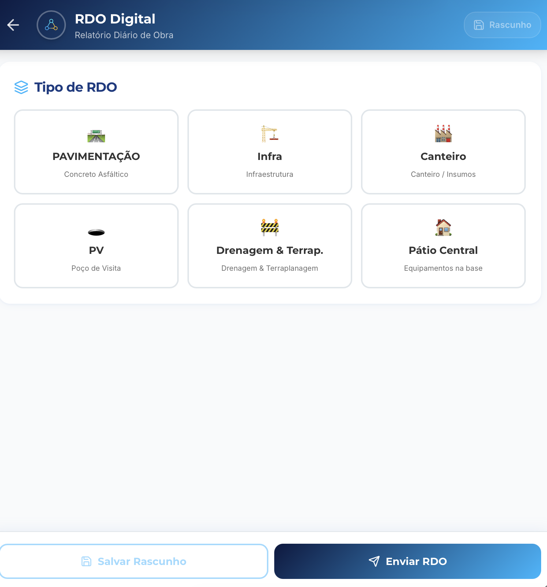
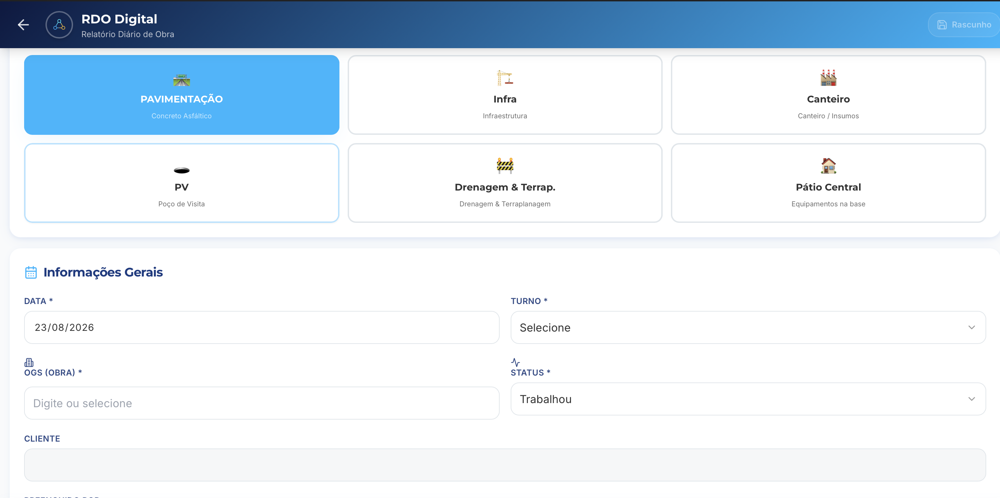
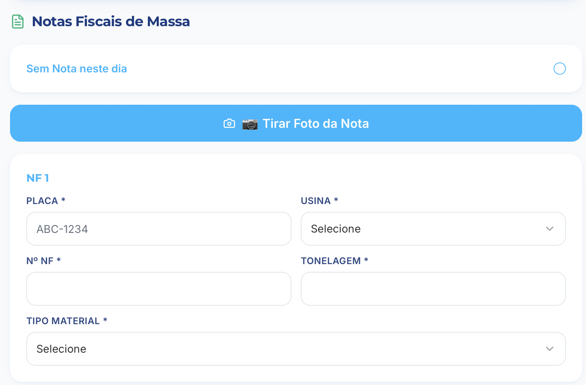
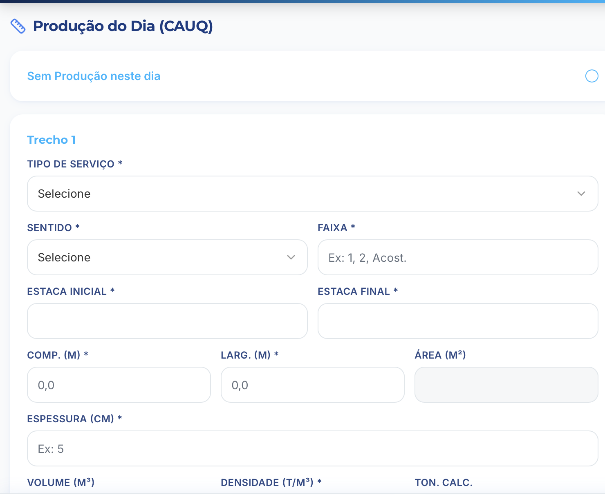
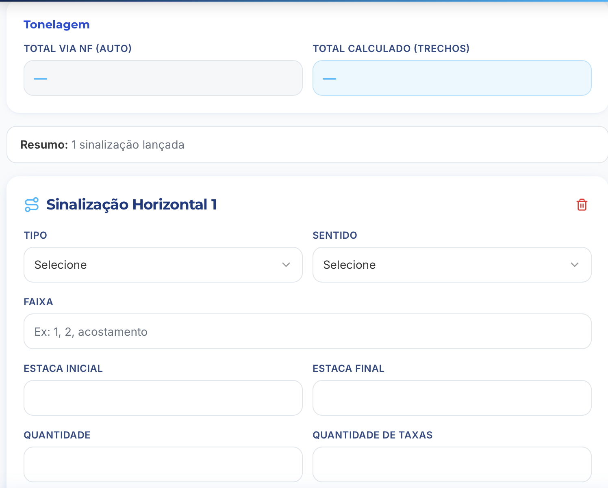
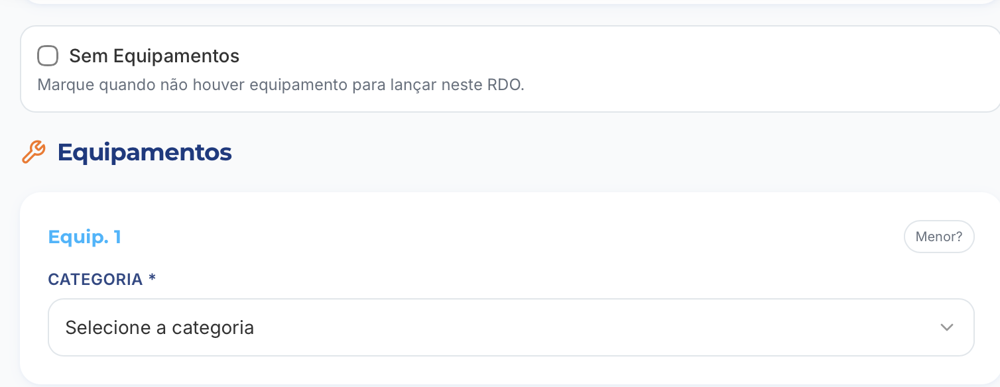
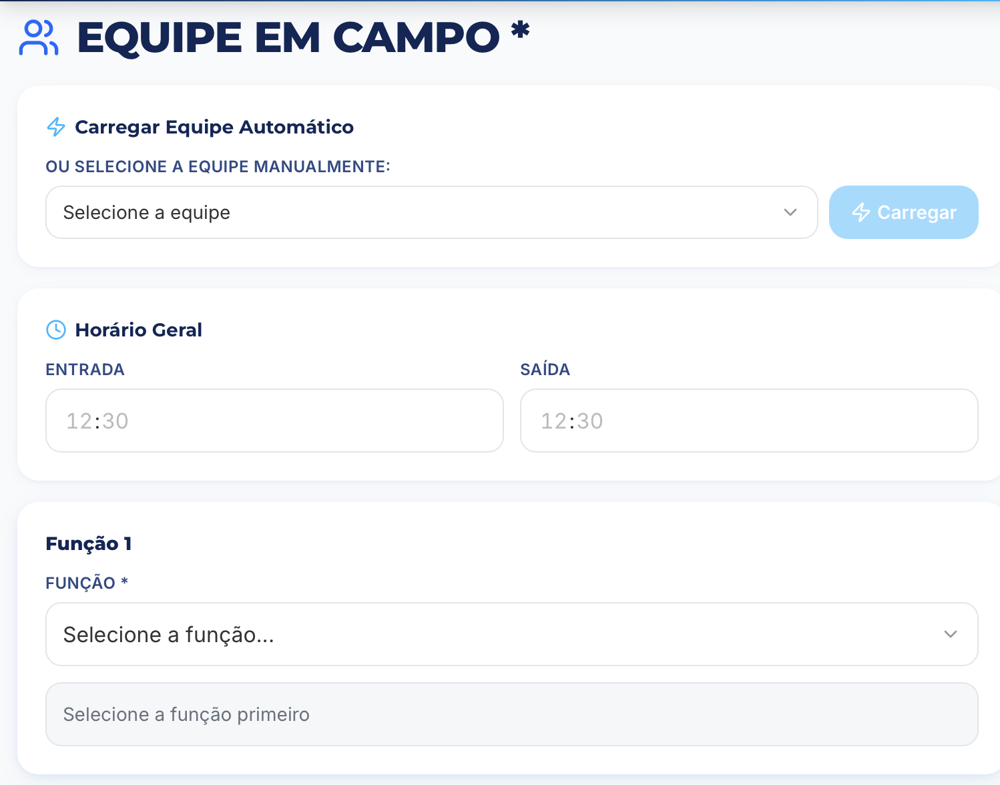
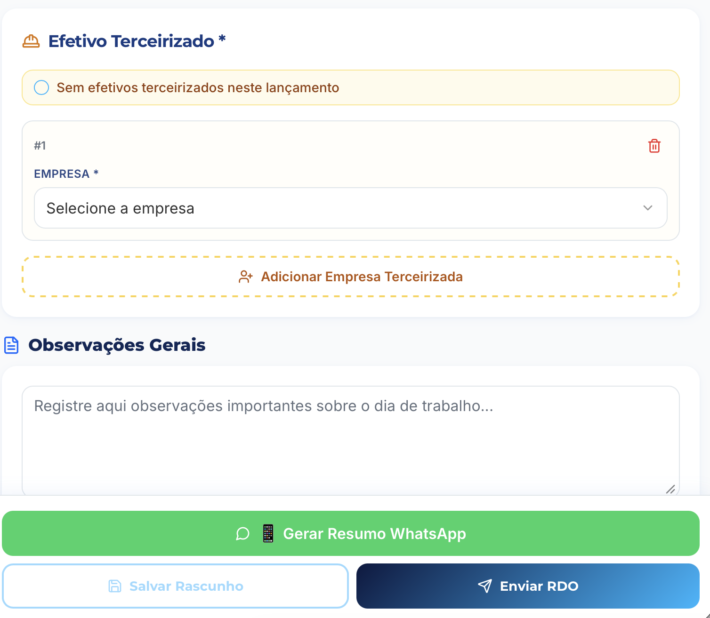

1) Escopo da apresentação
Usuário operacional Encarregado / engenharia / gestãoEste tutorial cobre o fluxo completo do RDO Digital no WF Obras: abrir novo RDO, preencher dados gerais, registrar produção/equipamentos/equipe e enviar.
- Preencher campos obrigatórios (*) antes do envio para evitar retrabalho no fechamento do dia.
- Em NF de massa, manter padrão de identificação por sigla da usina/fornecedor quando aplicável (ex.: ELL-, AUP-, USP-).
2) Entrada do módulo WF Obras
Leitura rápida da tela
- Breadcrumb confirma contexto: Home > WF Obras.
- Botão principal Novo RDO inicia o lançamento diário.
- Bloco Meus Lançamentos (RDOs) concentra histórico e retomada de rascunhos.
3) Tipo de RDO

Escolha da frente correta
- Selecionar o card conforme atividade do dia: Pavimentação, Infra, Canteiro, PV, Drenagem/Terraplanagem ou Pátio Central.
- Usar Salvar Rascunho quando faltar dado de campo.
- Usar Enviar RDO apenas após conferência dos blocos obrigatórios.
A escolha do tipo orienta os formulários das próximas etapas.
4) Informações Gerais

Campos-base do lançamento
- Conferir Data e Turno antes de seguir.
- Selecionar OGS (Obra) correto para rastreabilidade.
- Definir Status do dia (ex.: Trabalhou).
- Preencher cliente e responsável quando a operação exigir identificação formal.
5) Notas Fiscais de Massa

Registro de carga por NF
- Marcar Sem Nota neste dia somente quando não houver carregamento (isso desobriga o bloco de NF naquele RDO).
- Sem marcar "Sem Nota", é obrigatório ter pelo menos 1 NF completa: Placa, Usina, Nº NF, Tonelagem e Tipo de Material.
- Tirar Foto da Nota usa IA para preencher automaticamente os campos da NF.
- Depois, só revisar rapidamente os dados antes de enviar.
- Padronizar identificação da origem com sigla do fornecedor/usina quando aplicável.
6) Produção do Dia (CAUQ)

Apontamento técnico do trecho
- Selecionar tipo de serviço, sentido e faixa.
- Preencher estaca inicial/final, comprimento, largura e espessura.
- Conferir área, volume, densidade e tonelagem calculada antes de fechar o trecho.
- Marcar Sem Produção neste dia apenas quando realmente não houve execução.
7) Tonelagem e Sinalização Horizontal

Conferência de consistência
- Comparar Total via NF (auto) com Total calculado (trechos).
- No lançamento de sinalização: preencher tipo, sentido, faixa, estacas e quantidade.
- Usar resumo da tela para validar total de sinalizações lançadas no dia.
- Diferença entre NF e cálculo de trechos deve ser revisada antes do envio do RDO.
8) Equipamentos

Lançamento por equipamento
- Marcar Sem Equipamentos somente quando nenhum equipamento foi usado.
- Para cada item, selecionar categoria correta e completar os dados solicitados.
- Usar opção Menor? conforme regra operacional da frente.
9) Equipe em Campo

Composição e horário
- Tentar primeiro Carregar Equipe Automático.
- Se necessário, selecionar equipe manualmente e clicar em Carregar.
- Conferir horário geral de entrada e saída.
- Definir função para habilitar o preenchimento do efetivo por função.
10) Efetivo Terceirizado, Observações e Envio

Fechamento do RDO
- Quando houver terceiros, informar empresa(s) terceirizada(s); quando não houver, marcar opção correspondente.
- Registrar Observações Gerais com fatos relevantes do dia (ocorrências, restrições, decisões).
- Opcional: gerar Resumo WhatsApp para comunicação rápida.
- Finalizar com Enviar RDO após revisão final dos campos obrigatórios.
11) Checklist diário (rápido)
- Abrir WF Obras e iniciar em Novo RDO.
- Selecionar o tipo correto de RDO para a frente executada.
- Preencher Informações Gerais (Data, Turno, OGS, Status).
- Lançar NFs de massa completas; usar foto como apoio de OCR e sempre validar os campos antes do envio.
- Registrar produção por trecho (medidas e cálculos conferidos).
- Conferir Tonelagem total vs total calculado.
- Completar equipamentos, equipe em campo e efetivo terceirizado.
- Registrar observações e enviar RDO.